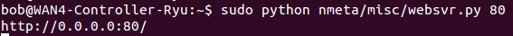

Misc Scripts
A few scripts that may be useful for testing are included in the misc sub directory. These include:
websvr.py
The websvr.py script implements a simple web server with HTTP/1.1 support, using the web python module. Very useful for testing HTTP traffic in a lab environment.
You'll need to install the web framework for python:
sudo easy_install web.py
You'll need to update the websvr.py script with the URLs that you want it to serve and create a static subdirectory with the relevant HTML files in it.
Start the web server with this command (can substitute port number):
sudo python nmeta/misc/websvr.py 80
Example usage, listening on port 80:

For more information, see documentation on web.py
htest.py
The htest.py script tests HTTP performance by sending repeated HTTP GET requests for an object over a persistent HTTP/1.1 connection
It uses the Python Requests module
Example usage:
TBD
jsonpretty.py
The jsonpretty.py script converts JSON API responses into human-readable format